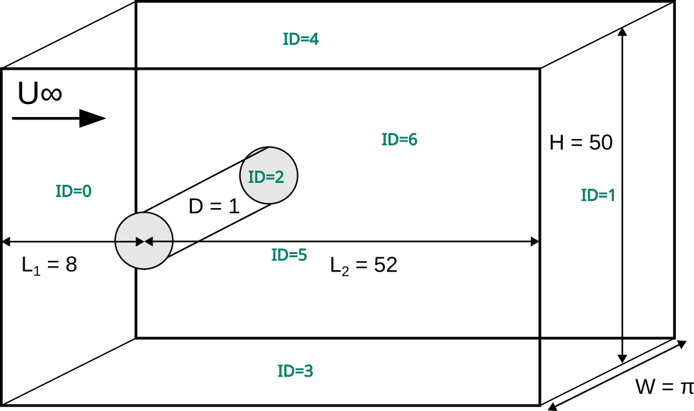
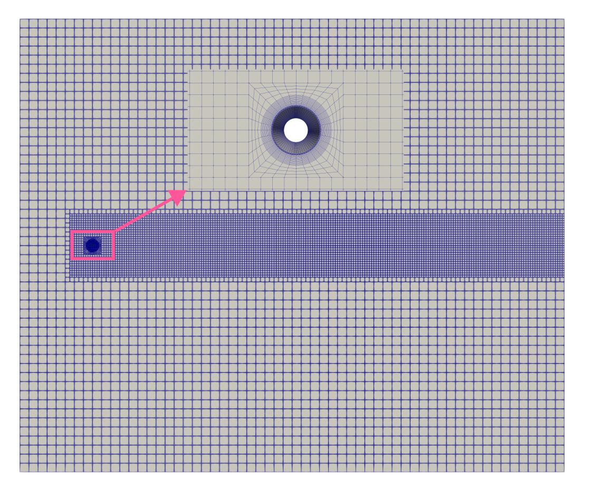

Turbulent Flow Around a Cylinder#
This example showcases the turbulent flow around a cylinder at \(Re=3900\). It features the matrix-free solver (lethe-fluid-matrix-free) which is more computationally efficient when solving problems using high-order elements and fine meshes. It also demonstrates the usage of static box refinement and boundary condition refinement to statically refine a mesh.
Features#
Solver:
lethe-fluid-matrix-free(with Q1-Q1 and Q2-Q2)Transient problem using
bdf2time integratorStatic mesh refinement using the Box Refinement feature
Files Used in This Example#
All files mentioned below are located in the example’s folder (examples/incompressible-flow/3d-turbulent-flow-around-a-cylinder).
Parameter file:
turbulent-cylinder.prmPostprocessing Python scripts:
postprocess-cylinder.pyandcylinder-functions.py
Description of the Case#
The flow around bluff bodies such as a cylinder is quite complicated and it is often used as a benchmark problem for CFD. Such flow typically involves boundary-layer separation, flow-regime transition, transition to turbulence, vortex shedding and coherent structures. If the body is symmetric, as is the case for a cylinder, the wake usually exhibits self-induced periodicity from vortices being shed from alternate sides of the body, generating fluctuating forces on the body.
This example is a canonical benchmark for LES, as explained in the book by Grinstein, Margolin and Rider [1]. It also showcases the capabilities of Lethe to statically refine the mesh a the beginning of the simulation using user-defined box refinement. The mesh is refined in the vicinity of the cylinder to capture the boundary layer and the wake region more accurately.
The simulation set-up as well as the boundary ids are illustrated in the following figure:
{kind=link}
Without loss of generality, \(U_\infty\) is set to 1 and the cylinder diameter \(D\) is set to 1. The Reynolds number is defined as \(Re = \frac{U_{\infty}D}{\nu}\), where \(\nu\) is the kinematic viscosity. The kinematic viscosity is set to \(\nu=2.5641025\times 10^{-4}\), which results in a Reynolds number of 3900.
Parameter File#
Mesh#
The mesh subsection specifies the computational grid. We use a custom mesh generated using the functionality uniform_channel_with_cylinder of the deal.II library’s GridGenerator to discretize the domain using high-order elements. The mesh is also refined once in the vicinity of the cylinder to capture the boundary layer and wake region more accurately. This is achieved by setting initial boundary refinement = 1 and boundaries refined = 2.
subsection mesh
set type = dealii
set grid type = uniform_channel_with_cylinder
set grid arguments = 25 : 8 : 52 : 4.71238898038 : 4 : 0.75 : 5 : 1: false : true
set initial boundary refinement = 1
set boundaries refined = 2
end
Warning
This uniform_channel_with_cylinder grid generator is only present in the 9.7 version of the deal.II library.
Box refinement#
The box refinement subsection refines the mesh in a specific region of the domain. In this case, we refine the mesh around the cylinder to capture the boundary layer and wake region more accurately. The box refinement is defined by its center, size, and refinement level. The mesh is refined by the box refinement twice by setting ìnitial refinement = 2.
subsection box refinement
subsection mesh
set type = dealii
set grid type = subdivided_hyper_rectangle
set grid arguments = 1, 1, 1 : -2, -3, -1 : 52, 3, 5 : false
set initial refinement = 0
end
set initial refinement = 2
end
A slice of the final mesh obtained from both the initial boundary refinement and the box refinement is shown in the following figure:
{kind=link}
Boundary Conditions#
The boundary conditions subsection establishes the boundary conditions:
subsection boundary conditions
set number = 6
subsection bc 0
set type = function
subsection u
set Function expression = 1
end
subsection v
set Function expression = 0
end
subsection w
set Function expression = 0
end
end
subsection bc 1
set type = outlet
set beta = 1
end
subsection bc 2
set type = noslip
end
subsection bc 3
set type = slip
end
subsection bc 4
set type = slip
end
subsection bc 5
set type = periodic
set periodic id = 6
set periodic direction = 2
end
end
Periodic boundary conditions are applied to the front (id=5) and back (id=6) walls of the domain to mimic an infinite domain along the main axis of the cylinder.
Physical Properties#
The Reynolds number is defined as: \(Re = \frac{U_{\infty}D}{\nu}\), where \(U_{\infty}\) is the velocity at the inlet, \(D\) is the cylinder diameter, and \(\nu\) is the kinematic viscosity. Since we set the values of \(U_{\infty}\) and \(D\), the Reynold number of 3900 can be imposed using the kinematic viscosity:
subsection physical properties
set number of fluids = 1
subsection fluid 0
set kinematic viscosity = 2.5641025e-04
end
end
FEM Interpolation#
The results obtained for the turbulent flow around a cylinder are highly mesh and order dependent. The present example consider both \(Q_1Q_1\) and \(Q_2Q_2\) elements. The order of the velocity and pressure interpolation can be set in the FEM subsection.
subsection FEM
set velocity order = 1
set pressure order = 1
end
Forces#
The forces subsection controls the postprocessing of the torque and the forces acting on the boundaries of the domain:
subsection forces
set verbosity = verbose
set calculate force = true
set output precision = 10
set output frequency = 10
end
By setting calculate force = true, the calculation of the force resulting from the fluid dynamics physics on every boundary of the domain is automatically calculated.
Post-processing#
To monitor the average velocity and pressure, we set calculate average velocities = true in the post-processing subsection. The average velocity is computed starting from the time step specified by initial time for average velocity = 25. This allows us to focus on the statistically steady state of the flow.
subsection post-processing
set calculate average velocities = true
set initial time for average velocity = 25
end
Simulation Control#
The simulation control subsection controls the flow of the simulation. To maximize the temporal accuracy of the simulation, we use a second-order bdf2 scheme. Results are written every 500 time-steps.
subsection simulation control
set method = bdf2
set output name = cylinder-Re3900
set output path = ./output/
set time end = 200
set adapt = true
set max cfl = 1
set time step = 0.002
set output frequency = 500
end
Running the Simulation#
Assuming that the lethe-fluid-matrix-free executable are within your path, the simulation can be launched with the following command:
and choosing the number of processes n_proc according to the resources you have available.
Note
The simulation takes approximatively 10 hours on 16 cores of a AMD Ryzen 9 7950X 16-Core Processor.
Results and Discussion#
In the following, results obtained with a box refinement of [2,3,4] levels and using \(Q_1Q_1\) and \(Q_2Q_2\) elements are presented. The results are compared with the literature, including the work of Cardell [2], Ong and Wallace [3], and Norberg [4].
First, the following animation displays the evolution of the velocity magnitude on a slice of the domain over time for a very coarse mesh (\(Q_1Q_1\) with box refinement of 2):
The secondanimation also present the velocity magnitude on the same slice but for a finer mesh and using high-order elements (\(Q_2Q_2\) with box refinement of 3). We we can clearly see much more details in the flow structure, such as the boundary layer and the wake region.
The key validation metrics are:
Strouhal number:
where \(f\) is the frequency of vortex shedding, \(D\) is the cylinder diameter, and \(U_\infty\) is the free-stream velocity. The frequency of vortex shedding is determined using a Fast Fourier Transform (FFT) of the lift force.
Drag coefficient:
where \(F_x\) is the time-averaged x-component of the force at the cylinder wall, \(\rho\) is the fluid density, and \(A\) is the reference area. In this 3D simulation, it is taken as the product of the cylinder diameter and its span in the z-direction.
Pressure coefficient:
where \(\bar{p}\) is the time-averaged pressure and \(p_\infty\) is the reference pressure sampled upstream of the cylinder at the inlet boundary condition.
The drag coefficient, the Strouhal number, and the pressure coefficient are computed using the postprocessing script postprocess-cylinder.py:
where the -f option specifies the output folder and the -l option specifies the label of the simulation (e.g., Q1Q1 or Q2Q2). This script can be used to visualize a single simulation or to compare multiple simulations by providing a list of folders and labels.
The drag coefficient measured experimentally by Norberg [5] is 1.0075. The Strouhal number value reported by Cardell [2] is \(0.215 \pm 0.005\) and the value reported by Ong and Wallace [3] is \(0.208 \pm 0.002\).
The following table summarizes the results obtained in this example, including the Strouhal number \(S_t\) and the drag coefficient \(C_d\).
Element |
Mesh refinement (l) |
\(C_d\) |
\(S_t\) |
|---|---|---|---|
\(Q_1Q_1\) |
2 |
1.2105 |
0.1965 |
\(Q_1Q_1\) |
3 |
1.0305 |
0.2110 |
\(Q_1Q_1\) |
4 |
0.9901 |
0.2122 |
\(Q_2Q_2\) |
2 |
1.0008 |
0.2134 |
\(Q_2Q_2\) |
3 |
0.9784 |
0.2112 |
Finally, we compare the pressure coefficient \(C_p\) obtained in this example with the experimental data from Norberg [5]. The following figure shows the pressure coefficient along the cylinder surface for both \(Q_1Q_1\) and \(Q_2Q_2\) elements, compared to the experimental data:
{kind=link}
Possibilities for Extension#
The Reynolds stress tensor and the average velocity downstream of the cylinder can be used to provide additional validation information.
The case could be extended to a higher Reynolds number, such as \(Re=1.5\cdot 10^5\), as covered in the book by Grinstein, Margolin and Rider [1].